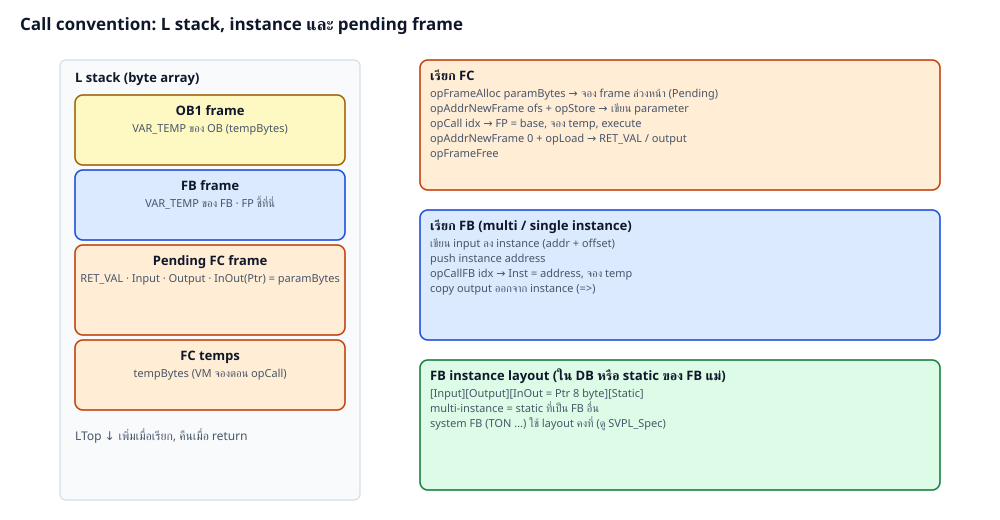

operand: b=u8 w=u16 i=i32 u=u32 q=i64 f=f64 (little endian หลัง opcode 1 byte) · jump offset นับจากต้นคำสั่งถัดไป
| # | Opcode | Operand | Stack | ความหมาย |
|---|---|---|---|---|
| 0 | Nop | |||
| 1 | PushI | q | → v | ค่าคงที่ integer |
| 2 | PushF | f | → f | ค่าคงที่ double |
| 3 | PushAddr | q | → a | address absolute |
| 4 | AddrInst | u | → a | Inst + bits |
| 5 | AddrLocal | u | → a | L: FP*8 + bits |
| 6 | AddrNewFrame | u | → a | L: pending frame + bits |
| 7 | AddrAdd | u | a → a | + bits |
| 8 | AddrIndex | i lo, u stride, u count | a i → a | index + range check |
| 9 | Load | b type | a → v | |
| 10 | Store | b type | a v → | |
| 11 | LoadPtr | a → a | อ่าน pointer 8 byte | |
| 12 | MemCpy | u bits | dst src → | |
| 13 | StrCpy | b wide | dst src → | ตัดตาม max ของ dst |
| 14–16 | Dup Drop Swap | |||
| 17–23 | AddI SubI MulI DivI ModI NegI AbsI | Int64; หาร 0 → 0 | ||
| 24–30 | AddF SubF MulF DivF NegF ExptF AbsF | Double | ||
| 31–34 | And Or Xor Not | bitwise | ||
| 35–44 | EqI..GeI, LtU..GeU | a b → bool | signed / unsigned | |
| 45–50 | EqF..GeF | |||
| 51 | Wrap | b type | v → v | ตัดตามความกว้าง |
| 52/53 | I2F U2F | |||
| 54–57 | F2ITrunc F2IRound F2IFloor F2ICeil | Round = banker | ||
| 58 | F2F32 | single precision | ||
| 59/60 | GetBit SetBit | b n | slice X | |
| 61/62 | GetField SetField | b sh, b w | slice B/W/D | |
| 63–66 | Shl Shr Rol Ror | b width | v n → v | |
| 67–70 | MinI MaxI MinF MaxF | |||
| 71 | Sel | g a b → r | ||
| 72–74 | Jmp Jz Jnz | i | ||
| 75 | Call | w block | FC | |
| 76 | CallFB | w block | a → | FB |
| 77/78 | FrameAlloc FrameFree | u / - | ||
| 79 | Ret | |||
| 80 | Builtin | w id | f → f | SQRT EXP LN LOG SIN COS TAN ASIN ACOS ATAN FRAC |
| 81 | SysFB | w id, b cntType | a → | timer/counter/edge |
| 82–88 | StrCmp StrLen StrConcat StrLeft StrRight StrMid StrFind | b wide | ||
| 89 | Trap | w code | runtime error | |
| 90 | MuxPick | b n | v0..vn-1 k → vk |

| FB | layout |
|---|---|
| Timer (Time) TP/TON/TOF/TONR, *_TIME, IEC_TIMER — 22 byte | IN 0, R 1, PT 16, Q 48, ET 64, _ST 96 (Byte), _T0 112 (LInt) |
| Timer (LTime) *_LTIME, IEC_LTIMER — 30 byte | IN 0, R 1, PT 16, Q 80, ET 96, _ST 160, _T0 176 |
| Counter CTU/CTD/CTUD | CU 0, CD 1, R 2, LD 3, Q 4, QU 5, QD 6, _CUO 7, _CDO 8, PV 16, CV 16+bits(type) |
| R_TRIG / F_TRIG | CLK 0, Q 1, _M 2 |
| RS / SR | S 0, R1 1, Q1 2 / S1 0, R 1, Q1 2 |
SysFB id: 1 TP, 2 TON, 3 TOF, 4 TONR, 11–14 แบบ LTime, 20 CTU, 21 CTD, 22 CTUD, 30 R_TRIG, 31 F_TRIG, 32 RS, 33 SR